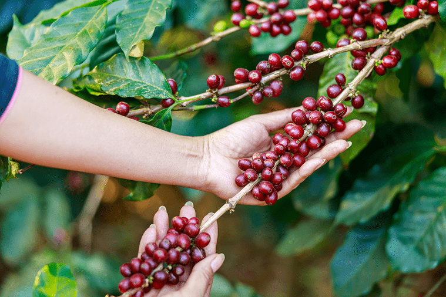
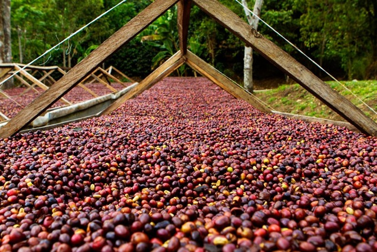
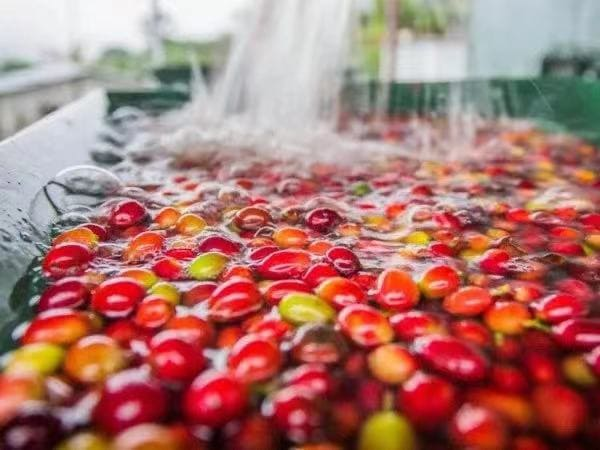
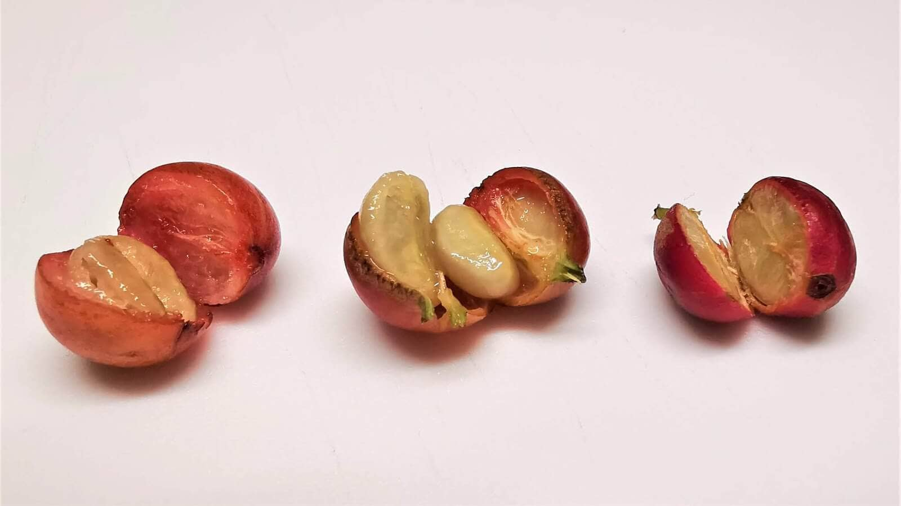

咖啡豆处理法
咖啡豆是咖啡樱桃的种子，咖啡櫻桃由外到內有果皮、果肉、果胶层、內果皮(银皮)，我們必须一层一层去除后，才会得到咖啡豆。去除的过程我们叫做处理，不同的处理法會影响到咖啡豆的风味，而这也是本篇的重点。
经過处理後的咖啡豆是生豆，经常是白色、翠绿色或是黄色，经過烘焙后才会变成咖啡色的咖啡熟豆。

三大处理法

日晒处理法
是將采收的咖啡櫻桃放置在露台上直接曝晒，直接接收陽光曝晒(大约需要27天-30天)，把水分從60%晒到只剩下12%左右完成。這個处理法，概念很简单、不太花钱，但是有很多的变数与风险；有很长一段時间是用在处理品质不是这么好的豆子上。

水洗处理法
將采收的浆果以去果皮机將大部分的果肉從咖啡豆上分离，再將帶殼豆导引至一個干净的水槽裡，浸泡在水中进行发酵以彻底去除残余的果肉层。透过水处理，未熟豆及瑕疵豆会因为浮力的关系而被挑选出來。

蜜处理法
蜜处理的意思來自于曝晒前咖啡豆很黏的果胶层，黏的感觉如蜜一般；当咖啡果肉与咖啡豆分离時，外围包覆著的果胶层经过曝晒，吸收空气中的湿气而使果胶层变黏。